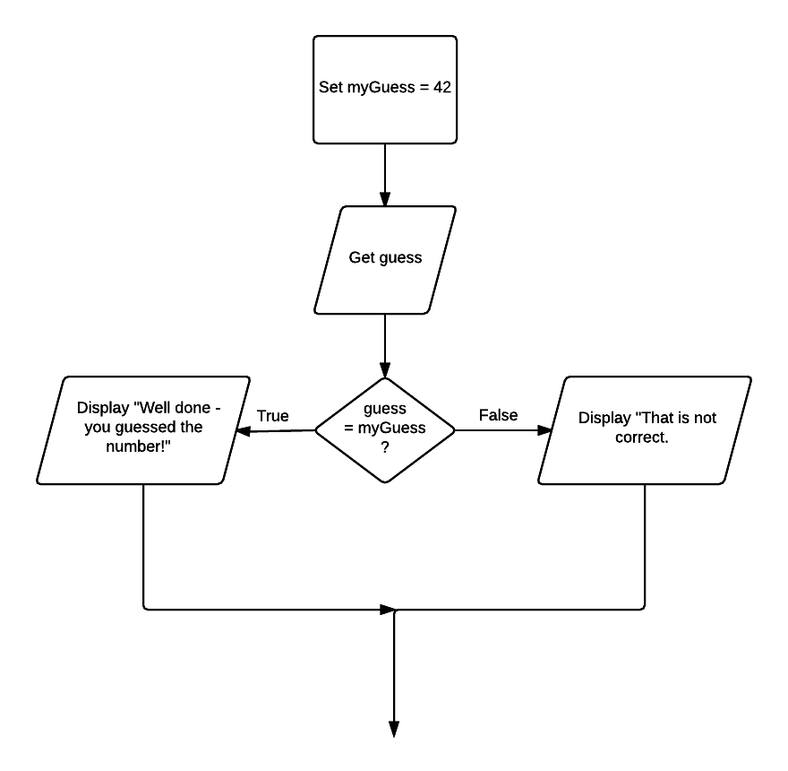

03 Binary selection
In binary selection, if the condition is met then one path is taken, otherwise the second possible path is followed. In the example below, the first case described requires a process to be completed if the condition is true and there is an alternative process if the condition is false.
Problem
Determine the message to be displayed for a guess the number game.
Pseudocode
Set myGuess = 42 Get guess IF guess = myGuess THEN Display "Well done - you guessed my number!" ELSE Display "That is not correct." END IF
Javascript
var myGuess = 42;
var guess = $("#guessInput").val();
guess = parseInt(guess);
if (guess === myGuess) {
console.log("Well done - you guessed my number!");
} else {
console.log("That is not correct.");
}
Flowchart
Open this document in Chrome and open the developer tools Windows: F12 or Ctrl-shift+I, Mac: Cmd + Opt + I.
Click run button.
Guess
Observe the console output.
Your task
Modify program.js to ask for the age. If the age is above 18 display "You can vote."